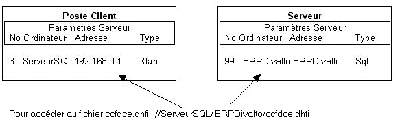

Par XPATH.dhop, ajoutez un chemin implicite à tous les utilisateurs (ou dans le fichier des chemins implicites par défaut) vers le serveur SQL. Dans notre exemple //ServeurSql/ERPDivalto, où :
ServeurSQL représente le nom du serveur dans la table des serveurs du poste client.
ERPDivalto représente le nom de la base de données configuré dans la table des serveurs du serveur SQL. Contrairement au paramétrage classique des chemins implicites pour des serveurs Harmony, on n'indique pas ici un chemin, mais bien le nom d'une base de données de la table des serveurs du serveur SQL.

Voir également : la configuration sur le serveur.